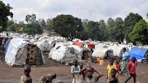
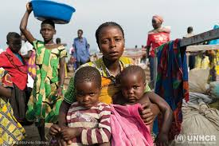
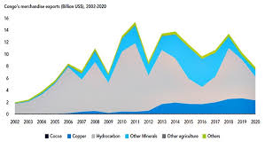

The consequences of the genocide in Congo are devastating. Millions of people have been killed or displaced, and countless others are living in fear. The region is facing a humanitarian crisis of epic proportions, with refugee camps overflowing and basic necessities like food, clean water, and medical care in short supply. The emotional and psychological scars run deep, with entire generations growing up in the shadow of violence.
The Aftermath


Humanitarian Crisis
As a result of the violence, Congo has one of the largest populations of internally displaced people in the world. Refugee camps are overwhelmed, lacking in proper sanitation and medical care. Many families are separated, and the vulnerability of women and children in these conditions is a growing concern. Humanitarian aid is often blocked or delayed, leaving millions in dire need of assistance.

Impact on the Economy
The economic fallout from the conflict is profound. Industries and infrastructure have been destroyed, and the country’s potential for growth has been crippled by the ongoing instability. While Congo should be one of the wealthiest nations due to its natural resources, the genocide has decimated its economy, plunging much of the population into extreme poverty. It will take decades to rebuild and restore any semblance of normalcy.